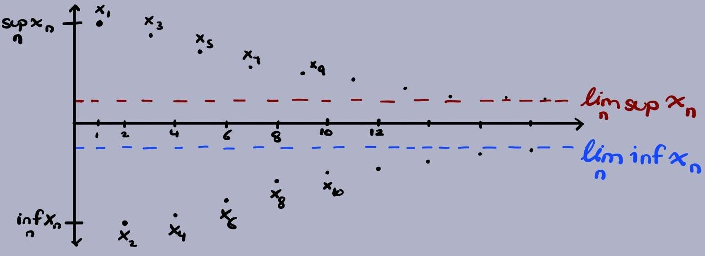
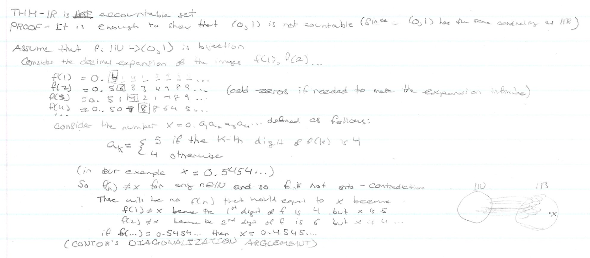
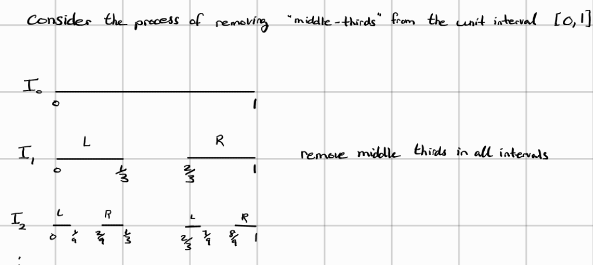
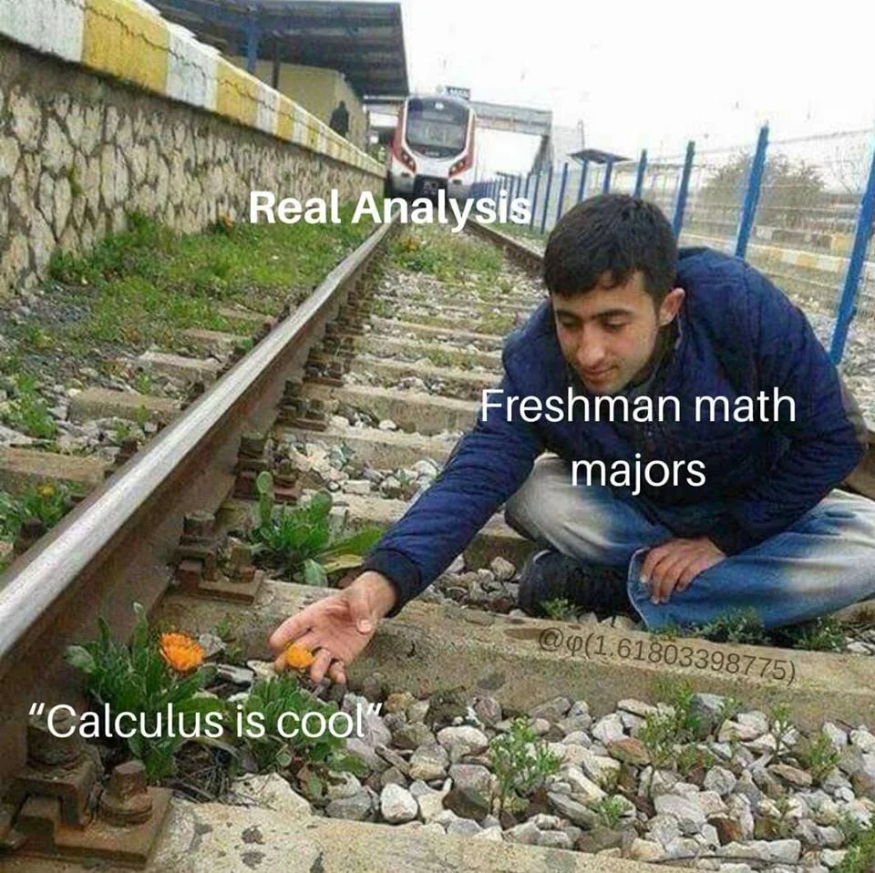
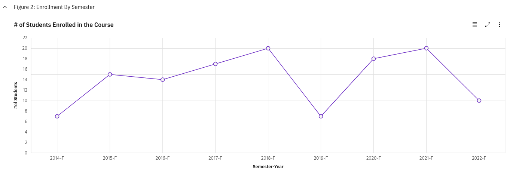
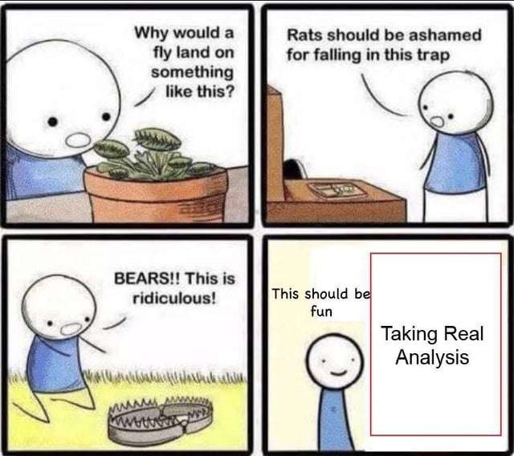

This is a course review of MATH3001 - Real Analysis 1 taken at CarletonU in winter 2023. Real Analysis is a course that is known to have devastated undergraduate Math students for generations. The course is the sucessor of MATH1052 - Calculus and Introductory Analysis 1 and the beginning of MATH2000 - Multivariable Calculus and Fundamentals of Analysis. The interesting part about CarletonU is that students are exposed to elements of analysis in first year and second year which may not hold true for students in the United States. CarletonU also offers another course in Real Analysis which confuses me what would the equivalent. All I know is that the successor course will cover more on function and Hilbert spaces and an introduction to Measure Theory.
NOTE: This blog post was accidentally released and is not complete. In particular, I only covered what was covered for a third of the course. As the review has been uploaded, I shall leave as is and slowly update the missing contents on a later date
TLDR:
- recall analysis concepts for 1052 such as continuity, uniform continuity, sequences, Bolzano Weierstrass, and etc
- recall what an open ball is, what it means to be open, closed, an interior point or a boundary point from 2052
- Vector Spaces are extremely nice and gives tons of properties for free unlike other spaces
- Real Analysis is difficult and our intuition about how functions or sequences behave may not be true in different metric spaces
The review is split into 2 main parts:
- Long Course Description: In-depth talk about the course topic from how I understood it
- Course Review: Solely focuses on the teaching style, difficulty, and anything that would be of interest
Professor: Jason Crann
Course Delivery: Synchronous lectures with synchronous tutorials
Class Size: 21 students (November 22 2023)OIRP
Course Description (from website): Metric spaces and their topologies, continuous maps, completeness, compactness, connectedness, introduction to Banach spaces
CLICK HERE TO SEE JUST THE COURSE REVIEW
Course Description (LONG) with Commentary:
The course begins with the completeness axiom that one may already be familiar with from first year which essentially told us that for the real numbers, there are no “gaps” between any two numbers and therefore there does not exist any gap in the entire number line. This property is also known as the “least-upper bound” property for the following reasons:
Completeness Axiom: any non-empty subset of $\mathbb{R}$ bounded above has a LEAST UPPERBOUND
That is, if $\emptyset \ne A \subseteq \mathbb{R}$ is bounded above, then $\exists s\in\mathbb{R}$ such that
- $a\le s \forall a \in A$ (set is bounded above)
- if $x\in \mathbb{R}$ is any upperbound for A, then $s\le x$ ($s$ is the least upper bound)
The least upperbound $s\in\mathbb{R}$ is what we refer as the supremum of the set A (i.e. $s = \sup A$). What the completeness axiom is essentially saying is that there exists a number (the supremum) that may not belong to the set A but is larger than every number in the set and if there exists another number that is larger than every number in the set, it has to be larger than our supremum or else our supremum will not be the least upperbound for the set.
Something not very important to the course but was interesting to see was how we defined the supremum and infimum of a set that isn’t bounded above or below respectively. If a set is not bounded above, then there does not exist a concrete number that is larger than every number in the set. Hence the supremum of a set not bounded above is $\sup A = \infty$. Similarly, if a set is not bounded below, then there is no concrete number that is smaller than every number in the set. Hence, the infimum is defined as $\inf A = -\infty$. I do not know why I find this fascinating because it is defined very logically.
Since we were in the topic of completeness axiom, Crann, the professor, decided to outline the contruction of the reals from the rationals. While I can see the motivation to cover this, it sure was confusing. The construction required the introduction of Dedekind Cuts as they are needed to construct the real numbers as they can be used to define basic arithmetic operations and satisfy the completeness axioms from my limited understanding of the proof. But I will not go over the contruction as I do not have a complete understanding of the proof itself nor was it very important in the course. However, I shall go over the definition of Dedekind Cuts as they may be useful for myself to know for future courses:
Dedekind Cuts: a subset $\alpha$ of $\mathbb{Q}$ is a CUT if
- $\emptyset \ne \alpha \ne \mathbb{Q}$ ($\alpha$ is a proper/strict subset of the rationals)
- if $p\in\alpha$ and $q\in\mathbb{Q}$ and $q < p$ then $q\in\alpha$ ($\alpha$ is downward closed)
- if $p\in\alpha$, then $p < r$ for some $r\in\alpha$ ($\alpha$ has no largest element$ i.e. there is always a bigger number in the set)
The way I understood the above definition is that a dedekind cut splits the rational numbers into two such that the proper subset $\alpha$ must have all its element be smaller than the second set $\beta$ and $\alpha$ does not have a maximum number (i.e. the set is not bounded above by a number in the set). This implies that $\alpha$ has infinitely many numbers in the set which makes sense by the density of the rationals. Some implications is that for a number $p\in\alpha$ and a number $q\notin \alpha$, $p < q$. Similarly, for $r\notin\alpha$, if $r < s$ then $s\notin \alpha$. With Dedekind Cuts, you could define the total order between two cuts $\alpha$ and $\beta$, define a 0 and addition, subtraction, multiplication, and etc with the cuts but that is omitted in this review.
Resembling from first year, we then proceed to talk about sequences and its properties. The first theorem covered in the course is the Monotone Convergence.
Monotone Convergence:
a. every non-decreasing sequence (i.e. $x_n \le x_{n+1} \forall n$) that is bounded above converges to its supremum (i.e. every increasing sequence that is bounded above converges to its supremum)
b. every non-increasing sequence (i.e. every decreasing sequence: $x_n \ge x_{n+1} \forall n$) that is bounded below converges to its infimum
In particular, any bounded monotonic sequence converges
While the theorem is straightforward, the notion of taking the limit of a supremum of a bounded sequence was very confusing. Let’s suppose we have a bounded sequence $(x_n)$ and define the following shortforms:
\[t_n = \inf_{k\ge n} (x_k) = \inf\{x_n, x_{n+1}, ...\} \nonumber\] \[T_n = \sup_{k\ge n} (x_k) = \sup\{x_n, x_{n+1}, ...\} \nonumber\]Then we have the following property:
\[\forall n\ge 1, \inf_{k\ge1} (x_k) \le \inf_{k\ge n} (x_k) = t_n \le \sup_{k\ge n} (x_k) = T_n \le \sup_{k\ge 1} (x_k) \nonumber\]In other words:
\[\forall n\ge 1, \inf_{k\ge1} (x_k) \le t_n \le T_n \le \sup_{k\ge 1} (x_k) \nonumber\]Note 1: The sequence, $(x_k)$, in question is a bounded sequence meaning the sequence is bounded below and bounded above
Note 2: As Mathematicians are lazy, it is common to see $x_k$ be referred as a sequence and not an individual term in the sequence. It depends on context. Sometimes it is explicitly clear such as “the sequence $x_k$”. Sometimes it is clear by context, $\inf x_k$ since $\inf$ or $\lim$ operates on a sequence (usually). This somewhat ambigious notation has caused a great deal of confusion to myself as I do not work with sequences often. However, it has become a bad habit of myself to follow the standard lazy notation and confuse myself in the process.
Before I discuss the confusing idea of taking the limit of the supremum of a bounded sequence, it is important to understand the above statement as nothing will make sense if one does not have a solid grasp of how sequences work. The way I understood the above property is relating this property to taking finer partitions of upper and lower darboux sums. Of course we are working with sequences so I’ll try my best to explain this without delving into the connection between this and darboux sums.
For starters, let’s break this statement into three different stages:
1. the infimum of any set is always smaller than its supremum
Before we can delve into the inequality, we first must agree with this statement. While I think this statement is obvious, it is worthwhile to remind ourselves with the definitions of infimum and supremum as a warmup.
For a nonempty set $S \subseteq \mathbb{R}$:
a. If S is bounded above and has a least upperbound, then the least upperbound is called the supremum of S
b. If S is bounded below and has a greatest lowerbound, then the greatest lowerbound is called the infimum of S
More concretely,
$M = \sup S$ if the following two conditions hold:
- $\forall x \in S, M \ge x$ (i.e. M is an upperbound of S)
- If N is some other upperbound of S, then $M \le N$ (M is the least upperbound)
Note: One may notice the definition of supremum and the completeness axiom are oddly similar. It is hard to differentiate the two without talking about metric spaces. Supremum is just a property of a set that defines the least upperbound for a set while the completeness is a property that requires the least upperbound to lie in the same “metric space”. For now, think of the following example as a motivation in understanding the difference between supremum and completeness axiom:
$\mathbb{R}$ is complete BUT $\mathbb{Q}$ is not complete
For instance, $A = \{ r\in\mathbb{Q} | 0 \le r \le \sqrt{2} \}$ is bounded above but $\sup A=\sqrt{2}$ is NOT in $\mathbb{Q}$ since $\sqrt{2}$ is an irrational number. Hence $\mathbb{Q}$ is not complete as the supremum of $A\subseteq \mathbb{Q}$ does not belong in $\mathbb{Q}$. But for the completeness axiom, any subset of $\mathbb{R}$ that is bounded above does have a supremum that lies in the real line.
In constrast with the supremum,
$m = \inf S$ if the following two conditions hold:
- $\forall x \in S, m \le x$ (i.e. m is a lowerbound of S)
- If n is some other lowerbound of S, then $m \le n$ (m is the greatest lowerbound)
It should be clear from the definition that the supremum and infimum are “opposites” of each other where the infimum is a lowerbound while the supremum is a upperbound of the set. Hence, $\inf A \le \sup A$.
2. $\displaystyle\inf_{k\ge 1}x_k \le \inf_{k\ge n}x_k \qquad$ the infimum of a smaller set is larger than the infimum bigger set
For simplicity, let’s suppose the $\displaystyle m = \inf_{x_k \ge 1} (x_k)$ is in the sequence i.e. $m\in (x_k)$. As the TA reminded me, the infimum may not be in the set itself but we shall suppose it is for simplicity sakes before delving into the case it isn’t. Another way to view this simple case is that we are finding a new minimum as we consider smaller and smaller sets/sequences. Note that when we refer to taking smaller subsets, we refer to ignoring the first n element in the set. We are not taking an arbitrarily smaller subset. Hence why the condition $k\ge n$ exists in the inequality.
Suppose our infimum (i.e. minimum) of the entire sequence $m$ is located anywhere in the sequence (we know such infimum exists as our sequence is bounded). As we take the infimum of smaller sets, the infimum $m$ may be omitted from the smaller set and thus we will have a new minimum in the set that is either equal to or larger than the previous infimum $m$. To illustrate (without loss of generality - WLOG):
\[\begin{align*} \inf\{x_1, x_2, \dots, m, x_{k}, x_{k+1}, \dots\} &= m \nonumber \\ \inf\{x_2, \dots, m, x_{k}, x_{k+1}, \dots\} &= m \\ \inf\{x_{k-1}, m, x_{k}, x_{k+1}, \dots m_1 \dots\} &= m \\ \inf\{m, x_{k}, x_{k+1}, \dots, m_1, \dots\} &= m \end{align*}\]the infimum of the bigger set has now been ommitted so we will have a new infimum (minimum)
\[\begin{align*} \inf\{x_{k}, x_{k+1},\dots m_1 \dots\} &= m_1 \qquad\text{($m < m_1$ and $\forall i \ge k, m_1 \le x_i$)}\\ \dots \end{align*}\]The issue of this illustration as noted above is that we assumed the infimum lies within the set. But there is no condition that requires the infimum to be in the set. Infimum is not the minimum but rather the greatest lower bound of the set. However, I hope I gave you an idea of why this inequality could hold in the simple case.
Let’s now suppose that it could be the case that the infimum does not lie within the set/sequence. Infimum as stated many times is the greatest lower bound of a set. As we remove an element at each iteration, the element $x_n$ removed could be one of the following:
- the infimum of the larger set
- the infimum of $x_n$ is the infimum of the larger set (i.e. $\displaystyle\inf_{k \ge n-1}(x_k) = \inf\{x_n\}$)
- the infimum of $x_n$ is not the infimum of the larger set (i.e. $\displaystyle\inf_{k \ge n-1}(x_k) \ne \inf\{x_n\}$)
In all 3 cases, $x_n \ge \displaystyle\inf_{k\ge n-1}(x_k)$.
- case 1: the removed element is the infimum
If we assume the sequence is unique, then the infimum of the smaller set will be greater than the previous infimum (the infimum of the larger set) by definition. If the sequence is not unique and it happens that there exists another element in the sequence whose value is equal to the infimum, then greatest lower bound remains the same. In either case, the inequality holds.
- case 2: $\displaystyle\inf_{k \ge n-1}(x_k) = \inf\{x_n\}$
If the element is the sole element in the sequence that determined the previous infimum of the set, then it’s removal will change the greatest lower bound. Similar to the previous case, if the removed element is not unique, then the greatest lower bound (infimum) does not change. In either case, the inequality holds
- case 3: $\displaystyle\inf_{k \ge n-1}(x_k) \ne \inf\{x_n\}$)
If the infimum of the removed element is not the same as the infimum of the larger set, nothing changes. The greatest lower bound will remain the same and thus the inequality holds
By exhaustion, we have shown that the inequality holds for all n. This was a very long aside to try to reason the inequality to myself. At the time of writing this, I have already spent over an hour reasoning this inequality to myself as I have reasoned about this inequality under a false presumption previously.
3. $\displaystyle \sup_{k\ge n}(x_k) \le \sup_{k\ge 1}(x_k) \qquad$ the supremum of a smaller set is larger than the supremum of the bigger set
It should be of no surprise that the maximum of a larger set could be larger than the maximum of a smaller set.
Let us go back to the question of what it means to take the limit of an infimum or the limit of a supremum which is also known as the $\lim\inf$ and $\lim\sup$. Consider a bounded sequence $(x_n)$ in $\mathbb{R}$ and the following sequences $\displaystyle (t_n) = \inf_{k\ge n}(x_k)$ and $\displaystyle (T_n) = \sup_{k\ge n}(x_k)$. As the sequence $(x_n)$ is bounded, there exists $m, M\in\mathbb{R}$ such that $m\le x_n \le M \quad \forall n\in\mathbb{N}$. Then we have the following:
- $(t_n)$ is a non-decreasing (i.e. increasing) sequence
- $(T_n)$ is a non-increasing (decreasing) sequence
From the Monotone Convergence Theorem, $\lim (t_n)$ and $\lim (T_n)$ exists. By monotonicity, we have
- $\displaystyle \lim_{n\to \infty}\inf(x_n) = \lim_{n\to\infty}\inf_{k\ge n}(x_k) = \sup_{n\ge 1} t_n = \sup_{n\ge 1}(\inf_{k\ge n}(x_k))$
- $\displaystyle \lim_{n\to\infty}\sup(x_n) = \lim_{n\to\infty}\sup_{k\ge n}(x_k) = \inf_{n\ge 1} T_n = \inf_{n\ge 1}(\sup_{k\ge n}(x_k))$
This concept is hard to grasp without seeing an illustration of what it means to take the limit inferior and the limit superior. I will first attempt to explain how to interpret this through words but feel free to view the illustration instead as a picture explains a thousand words and is likely superior to my inferior writing (let’s pretend I actually even know what I am even writing about but analysis is not my forte) :D
Let’s recall that:
- $t_n$ is a non-decreasing sequence and hence is a (non-strict) increasing sequence
- $T_n$ is a non-increasing sequence and hence is a (non-strict) decreasing sequence
Also recall:
- $t_n = \inf_{k\ge n}(x_k)$ and therefore represents the greatest lowerbound by definition of infimum
- $T_n = \sup_{k\ge n}(x_k)$ and therefore represents the lowest upperbound by definition of supremum
As $t_n$ is an increasing function, we are getting a larger and larger lowerbound as we take the infimum of a smaller and smaller set (as shown earlier). The opposite applies for $T_n$ where we have showed that as we take larger and larger N, we actually obtain a smaller supremum as we consider less and less elements in the sequence.
Essentially, the way I read $\displaystyle\lim_{n\to\infty}\inf(x_n) = \sup_{n\ge 1}(\inf_{k\ge n}(x_k))$ is the following:
\[n = 1: \inf\{x_1, x_2, x_3, ....\} = m_1 \nonumber \\ n = 2: \inf\{x_2, x_3, ... \} = m_2 \\ n = 3: \inf\{x_3, ... \} = m_3 \\ \dots\]Then take the supremum of $m_1, m_2, m_3, \dots$ since taking the infimum of smaller sets gets larger and larger.

An illustration of how a part of the sequence converges to its limit inferior and the other to its limit superior. How would this diagram change if the sequence converges?
In the illustration above, one can see that $T_n$ converges to its limit superior (the red dashed line) and $t_n$ converges to its limit inferior (the blue dashed line). Although the sequence is bounded and the distances between every odd point (i.e. $x_{2k+1}$) and every even point (i.e. $x_{2k}$) in the sequence seems to get smaller, it does not mean the sequence converges. All we can infer from this diagram is that there exists a converging subsequence.
Property: every bounded sequence $(x_n)$ in $\mathbb{R}$ admits a subsequence converging to $\displaystyle\lim_n\sup(x_n)$
(note: there also exists a subsequence converging to the limit inferior)
This property can be generalized with a concept about sequences we learned from first year,
Bolzano-Weierstrass Theorem (in $\mathbb{R}$): Every bounded sequence in $\mathbb{R}$ has a convergent subsequence
The keyword in Bolzano-Weierstrass is subsequence, i.e. the fact that there exists a convergent subsequence. Bolzano-Weierstrass does not state a bounded sequence itself is convergent. This is a common mistake students like myself make and also explains why the sequence in the diagram above does not converge. Rather it has two subsequences that converge to the limit superior and inferior respectively.
Recall the comment I made about the diagram that the distance between the odd and even points seem to decrease as N gets larger. This comment should ring a bell about the type of sequences we are working with from first-year, cauchy sequences
Cauchy Sequences: a sequence $(x_n)$ is CAUCHY if $\forall \epsilon > 0 \,\, \exists n\in\mathbb{N}$ such that $\forall n, m \ge N, |x_n - x_m| < \epsilon$
We are also given the following properties about Cauchy Sequences:
Properties of Cauchy Sequences:
- every convergent sequence is cauchy
- every cauchy sequence is bounded
We also were taught in first year that for a sequence in the reals, we have the following:
Completeness of $\mathbb{R}$: Every cauchy sequence in $\mathbb{R}$ converges
The sequence we are working with does not converge as I said before. This may seem odd to you because the distance does seem to get smaller and smaller as we approach to infinity and so should be cauchy and therefore converge. However, as $(T_n)$ converges to the limit superior and $(t_n)$ converges to the limit inferior, the overall sequence $(x_n)$ actually does not converge to a particular point but rather alternates between the limit inferior and limit superior. So the distance between $(t_n)$ and $(T_n)$ eventually becomes constant and therefore breaks the $\forall\epsilon$ requirement of cauchy sequences. One can reasonably look at the diagram and see it is obvious that the sequence drawn in the diagram never converges as the limit inferior and limit superior are not the same point. This leads us to the final fact about limit superior and limit inferiors I want to mention,
Properties of Limit Inferior and Limit Superior (limsup and liminf prop):
- if $(x_n)$ converges then $\displaystyle \lim_n\inf(x_n) = \lim_n\sup(x_n) = \lim_n (x_n)$
- if $(x_n)$ is bounded and $\displaystyle\lim_n\sup(x_n) = \lim_n\inf(x_n)$ then $(x_n)$ converges and $\displaystyle\lim_n(x_n) = \lim_n\sup(x_n) = \lim_n\inf(x_n)$
One of the key properties for a sequence to converge (which is not the only requirement for convergence), is the fact that the limit inferior and limit superior are equal to each other. I wonder what other analysis tools are similar to this :D
Sets
Unfortunately before we can go into the meat of the course, there are a few more things to look at. I am going to skip basic set theory and go over the definitions and results I find interesting from this subject without much explanations.
Disjoint sets: A $\cap I = \emptyset$
Two sets are said to be disjoint if their intersection is the empty set itself. In other words, the two sets do not have anything in common and hence are disjoint.
Injective: The following are equivalent:
- if $f(a_1) = f(a_2) \implies a_1 = a_2$
- |$f^{-1}({b})| = 1 \forall b\in B$
When we think of a function to be injective, we immediately think of the first definition. However, the second definition using preimage is an extremely powerful tool. Keep this in mind when doing the assignment because it’ll make your life so much easier.
Surjective: The following are equivalent:
- $\forall b \in B \exists a\in A$ such that $f(a) = b$
- $f(A) = B$
Countable: a set is countable if it is finite or countably infinite (i.e. there is a bijection between the set and $\mathbb{N}$ Properties: let A be countable then:
- if $f:C\to A$ is injective then C is countable
- if $g:A\to B$ is surjective then B is countable
Countable Union of countable sets is countable
Theorem: (0, 1) is uncountable Corollary: $\mathbb{R}$ is uncountable
This was an interesting result I have seen in my freshman in CS many years ago. Although the proof for this in MATH3001 differs from the proof I have seen in first year, the principle is the same. In MATH3001, they constructed a sequence where each element in the sequence was a base 10 decimal expansion (i.e. $\displaystyle a_n = \sum_{m=1}^\infty \frac{a_{nm}}{10^m}$ so that $0\le a_{nm}\le 9$). Essentially you construct a contradiction by finding a decimal expansion that is unique and does not exist between (0,1). This number is constructed by taking the diagonal entries of the entire sequence (i.e. $x_{nn}$) and settiting it to either two values, 3 if the number $a_{nn} = 3$ or 5 if $a_{nn} \ne 3$. If that was confusing, here’s the explanation in mathematical form:
\[a_n = \sum_{m=1}^\infty \frac{a_{nm}}{10^m} \qquad \text{so that $0\le a_{nm}\le 9$} \nonumber \\\]Define $x\in (0,1)$ such that $x = 0.x_1 x_2 x_3 \dots$ where \(x_i = \begin{cases} 3 & \text{if } a_{ii} \ne 3\\ 5 & \text{if } a_{ii} = 3 \end{cases}\)
The way I learned it as a CS student back in first year was using something called the cantor’s diagonalization argument which is essentially what we did above. Essentially, by contradiction, assume (0,1) is countable and list the elements as $x_1, x_2, x_3, …$ where each $x_i \in (0,1)$ So far the same, except we construct a new number y such that we flip the bits in the diagonals. Same argument but as I was in CS, we dealt with binary strings instead. However, I was unable to find the proof and instead found a proof that matches what we did in MATH3001. The use of diagonalization is a powerful tool that I have seen outside of traditional Math courses. The diagonalization argument is often used to prove the halting undecidability proof which asks whether there exists a general algorithm to detect whether the program will eventually halt or run forever given any program along with the program’s input data as input to this algorithm/machine.

A note about cantor diagonalization argument back in my freshman in CS
Naturally, if $(0,1)\subseteq \mathbb{R}$ is uncountable, it is of no surprise that $\mathbb{R}$ is also uncountable.
Cantor Set: $\displaystyle \Delta = \cap_{n=0}^\infty I_n$ where $\Delta \ne \emptyset$
A much easier way to understand what a cantor set is to think of it as the points reminaing as we remove the “middle-thirds” from the unit interval [0,1]. Here’s an illustration from wikipedia of the process of removing the middle thirds of each line segment for 6 iterations:

Before I discuss an interesting property about the cantor set, I want to convince you that this set cannot be empty. At each iteration, the set $I_n$ gets smaller, achieving a nested sequence of sets. As we repeat this process infinitely many times, there is one particular set of points that still remain in the cantor set. Those are the endpoints of each $I_n$. Hopefully the illustration below can clarify things:

At each iteration, we can see that the endpoints of the line segments from the previous iterations still remain like $0, \frac{1}{3},\frac{2/3}, 1$ in the 2 iteration running the process of removing the middle-thirds. Hopefully this is suffice to convince you that the cantor set is not empty. In other words, the endpoints of each $I_n$ belong to $\Delta$, so one could think $\Delta$ could be countable infinite (think of the density of $\mathbb{Q}$ so we can always take away the middle third infinitely many times). However, that is not the case.
$\Delta$ is uncountable
This was surprising to me because it really seemed that the cantor set just contained the endpoints only. However, there are apparently uncountably many points in the cantor set that are not the endpoints. This fact itself is confusing to myself. I was suggested to think of reprensenting every number as a ternary (i.e. base 3) meaning every number can be represented using 0s, 1s, and 2s. For instance, 1 will $0.\overline{222} = 1$ (similarly to how $0.\overline{999} = 1$). Then every number in the cantor set is the numbers that do not contain 1 in their ‘ternary’ expansion. I still need to wrap my head around this but hopefully this will all make sense in the near future.
Metric & Normed Spaces
The existence of different ways to measure distances was an interesting concept. When I consider measuring the distance between two points in space, I almost never question what that really means because I have always been measuring distance on $\mathbb{R}^n$ where $1 \le n \le 3$ (i.e. 1D, 2D, 3D plane). Due to my narrow mind, it has never came to my attention that the manhatten distance used in the realm of CS can be used in analysis. Real Analysis has taught me that analysis can be intersected in many different fields.
It turns out whether we noticed it or not that many concepts in analysis we have learned in university such as convergence, continuity, compactness, connectedness are dependent on the distance between points. For instance, in the definition of continuity on $\mathbb{R}^n$ states that a function f is continuous at $x_o$ if $\forall \epsilon > 0, \, \exists \delta > 0$ such that $|x - x_o| < \delta \implies |f(x) - f(x_o)| < \epsilon$. We have used $|.|$ to be the distance function between two points. But what properties is desirable in a distance function to be of any interest worth studying? Similarly to how we define a structure to a set using groups, in analysis we have a structure that formalizes the concept of distance in a set.
Metric: Given a set M, a function $d: MxM \to [0, \infty)$ is a metric on M if:
- $d(x, y) = 0 \iff x = y$
- $d(x, y) = d(y, x) \forall x, y \in M$ (SYMMETRIC)
- $d(x, y) \le d(x, z) + d(z, y) \forall x, y, z \in M$ (TRIANGLE INEQUALITY)
These three properties of a metric reminds me of the three properties of an equivalence relation:
- reflexivity
- symmetry
- transitivity
Reflexitivity states that every element is related to itself. In an analogous way (though in a abusive way), the first property of a metric states that the distance between itself is 0. The fact that two points with a zero distance must be the same point is of no surprise. This is an important properties when dealing with convergent sequences. For instance, if $(x_n)\to x$ then eventually somewhere along the sequence, the distance between the elements in the sequence and x gets so arbitrarily small that they become the same point.
Both equivalence and a metric requires some sort of symmetry. This should come to no surprise to anyone that distances must be symmetric or else our notion of the distance metric we use in our everyday life would be broken.
Transitivity and triangle inequality are two complete different concepts but I cannot help notice that both concepts traditionally deal with 3 distinct elements. Transtivity states that if a ~ b and b ~ c then a ~ c. In this definition, the element b acts as an intermediary node/element. If we change the operator from equivalence to distance, we can view a ~ c as the element a being the starting node and c to be our destination. And hence obtain the following: $d(a, c)$. Of course this relationship between transitivity and triangle inequality is a far stretch but my brain likes to relate new concepts to concepts my brain is more familiar with. Using this weird logic of mine, a ~ b becomes d(a, b) and b ~ c to be d(b, c). In triangle inequality, we have that $d(a, c) \le d(a, b) + d(b, c)$ so we see that b is acting like an intermediary node just like in transtivity. I want to emphasize, one should think about the triangle inequality by thinking of an actual triangle and not with equivalence relation. I just wanted to mention it as I thought it was an interesting connection my brain made.
One final note about the definition of metric is that distance cannot be negative. There is no such thing as negative distances. Hence why the distance functions are defined as mapping from 0 to infty.
Two metrics that we might be familiar with are:
Euclidean Distance: $d_2 = (\displaystyle \sum_{i=1}^n |x_i - y_i|^2)^\frac{1}{2}$
Hamming Distance: $d(w_1w_2w_3\dots w_n, v_1v_2\dots v_n) = |{i : w_i \ne v_i}|$
The Hamming Distance may not be familiar to you if you have not taken MATH3855 - Discrete Structures or computer science courses in information theory or cryptography. If you have never seen Hamming Distance before, forget about it as it is not important for this course.
Though what is important to know is the discrete metric. This was a weird concept for me to see and it gets weirder as the course progresses for my brain to comprehend.
Discrete Metric: \(d(x, y) = \begin{cases} 0 & \text{if } x = y\\ 1 & \text{if } x \ne y \end{cases}\)
Essentially what the discrete metric does is say if two points are not the same, then they have a distance of 1. As the name implies, the distance is discrete but we can go further and say the values are binary in nature where it poses the question: “Are x and y two different values?”.
When working with vector spaces, we have learned that the distance between two vectors is called the norm. Depending on your background in Linear Algebra, one will also know that there are a few ways to define the norm between two vectors which depends on the inner product. More specifically, the norm is typicalled defined as the following:
NORM (Using Inner Products): For a vector space $V$ over some space, the norm is a function $||\cdot||: V \to [0, \infty)$ defined as $||v|| = \sqrt{\langle v, v \rangle}$
where $\langle v, v \rangle$ is defined to be an inner-product over the vector space $V$. However, in Real Analysis, we’ll be introduced to various different norms that do not fit the regular definition of norms we have come to know in Linear Algebra. A norm more abstractly is defined simply as a function that respects the following three norm properties:
Norm Properties: For $x\in V$(a vector space):
- $||x| = 0$ iff $x = \vec{0}$
- $||\alpha x || = |\alpha||| x || \quad \forall \alpha \in \mathbb{R}, \forall x \in V$
- $||x + y|| \le ||x|| + ||y|| \quad \forall x, y \in V$ Note: ||\cdot|| \ge 0 \quad \forall x \in V
Now that we know what a norm is, we can now talk about NORMED LINEAR SPACES (which I will refer as normed vector spaces).
Normed Vector Space: A pair $(V, ||\cdot||)$ consisting a vector space V with a norm on V
An interesting note that Carothers, the author of the textbook, states in respect to metrics on a vector space is that
Not all metrics on a vector space come from norms, however, so we cannot afford to be totally negligent
- Carothers Real Analysis
On the real line, the absolute function is one such norm. But for $\mathbb{R}^n$, we have a class of norms that we typically use in the course called the $l^p$ norms or also referred as the p-norms:
$||\cdot|| = (\displaystyle \sum_{i=1}^{n} ||x_i||^p)^\frac{1}{p}$, where $x = (x_1, x_2, \ldots, x_n)\in \mathbb{R}^n, p\in [1, \infty)$
Manhatten Distance ($p = 1$): $||x||_1 = \displaystyle \sum_{i=1}^{n} |x_i|$
Euclidean Norm ($p = 2$): $||x||_2 = \displaystyle (\sum_{i=1}^n |x_i|^2)^\frac{1}{2}$
Sup Norm ($p = \infty$): $||(x, y)||_\infty = max\{|x|, |y|\}$
These p-norms induce a metric space
Review
Review:
Real Analysis is one of those infamous course that seemingly torements the mind of undergraduates in Mathematics in North America. This is the course that generalizes our understanding of analysis from our freshman and sophomore years and in the process break our intuition. At CarletonU, this is essentially the course that either holds juniors held back an entire year or switch to another stream of Mathematics whether it be a general 3-year program or into Applied Mathematics. The course may not be the most difficult math course available, but it is likely the hardest math course that students must take if they want to graduate in the pure mathematics route.

Source: Reddit
For the past decade, the course is either taught by two professors: Jaworski or Crann. While I have not updated the graph I generated for my site ChonkerU - a course enrollment visualization website, I can definitely tell you there were a lot of students repeating the course after many either dropped or failed their first attempt with Jaworski. Jaworski is notorious among students to be extremely rigid and tough with extremely high expectations. While he is known to increase your understanding of Mathematics to another level due to his rigor and his ability to teach very well, you would also be left with either a failing grade or an emotional ride due to the amount of material he covers and high expectations.

Course enrollment in MATH3001 from 2014 to 2022. It is missing data from 2023 where there were 21 students enrolled
Notice in the above graph, anytime there is a major dip in enrollment, it’s because Jaworski is teaching the course with the exception of 2015 which seemed to be a particular good year.
There are two Real Analysis course at CarletonU:
- MATH3001 - Real Analysis 1: Metric spaces and their topologies, continuous maps, completeness, compactness, connectedness, introduction to Banach spaces.
- MATH3002 - Real Analysis 2: Function spaces, pointwise and uniform convergence, Weierstrass approximation theorem, Lebesgue measure and Lebesgue integral on the real line, Hilbert space, Fourier series.
While I do not know what American schools cover in Real Analysis, it was always in my understanding one should take a Real Analysis course to call yourself a Math Major (either officially or via audit). So I decided to take it for fun which may not have been the best decision, but my decision to quit my job and study Math isn’t either since I have no plans ever using Math in my career.

Unknown source
Real Analysis gives you a deeper understanding what it means for functions to be continuous or what it means for a set to be complete, compact, or connected. It contains many different metric spaces that are equipped with different metric/distance functions such as the Manhatten Distance and the Hamming Distance that Computer Science Majors may have seen. It comes to a big surprise to learn a lot of unintuitive concepts like how the cantor set is uncountable or that not all cauchy sequences converge.
Crann is indeed a good lecturer and seems to have not lost his energy unlike poor Starling who seems to be tired (but somehow able to teach well). A lot of students commented how excited Crann seems to be to teach this course and go off in tangent about topics he likes (he even dedicated a week or two on p-adics because he really wanted to show it to us. Luckily it was not graded material). Crann does seem to be a busy man, having meetings with other academics or needing to leave soon after lectures or office hours for a business relate dmeeting. One issue I have with Crann is his pacing during online lectures, he tends to go rapidly but that is likely due to the fact he is not able to gauge his audience through Zoom. Whenever his internet lags is a moment for me to catch up writing and process what he wrote :D On a more positive note, his writing is very clear and big similarly to Starling who ensures he writes clear and big with lighting and etc.
The course has two marking scheme:
Scheme 1:
- Assignments: 15\%
- Tutorials: 5\%
- Term Tests: 30\% (highest of the two tests)
- Final Exam: 50\%
Scheme 2:
- Assignments: 15\%
- Tutorials: 5\%
- Final Exam: 80\%
You will notice one of the marking scheme is exam heavy, this was probably to give students a second chance. Crann was being very generous with us changing the first marking scheme to be the highest of the two term tests instead of grading each term test 15\%. In regards to the tests, Crann’s style is to have the first question be a set of true and false questions followed by 2-3 proof questions. This seems standard but I did feel very deceived for the first test. I recall being told the test structure for the proof questions being split into 2 parts where the first part asks you for the definition and the second part is to prove the question which relates to the definition or theorem above. This is how Starling does it. However, it was not. As Crann did change the marking scheme to be more generous, it didn’t matter. The first test covered metric and normed spaces, toplogy such as open and closed sets, boundary, and interior points, what it means to be bounded, dense, and metric toplogy. While Crann does not provide previous midterms to practice on, he does give you a set of 10-12 questions for each test as practice. Do not be surprised if there is at least 1 problem from the list of practice problems on the test. Sadly for myself, the only question I did not attempt in the first set of practice problems was metric toplogy and the exact question was on the test causing me to do poorly as I didn’t even study what that was. I spent so much time trying to solve the problem that I ended up not finishing up the proof for one of the question I had an idea how to solve. I do not think most of the class got it either based on the averages and the fact the toplogy question was a tough question to solve (hence why I skipped it during practice thinking it was too tough to be solved in a 50 minutes test). Which beings to my attention, the tests were not written during lectures but during tutorials which I will explain later. From what I know, the average for the first test was around 65% but the median was around 54%. I did not do so well … I barely passed the first test …
The second test was similar in structure and covered what Crann called the three C’s:
- Continuous
- Connected
- Completeness
There was a noticeable improvement in the class median and average being relatively the same at around 65%. I did indeed do better but there were problems I thought I didn’t need to study for thinking it was not on the test … but I was wrong …
In regards to how the tutorials ran, it was a reverse-classroom style, a style that is gaining popularity within the Mathematics Department. Students would work in groups up to 4 and solve about 3 problems each week. Usually I am in the tutorial just being totally lost while my partners would solve the problems. This was a good sign I am not going to to do well in the course … As tutorials are 50 minutes long and the two term tests were written during tutorials, you can imagine that there isn’t much time to work on the test if you are behind in class like me.
There was supposed to be 5 assignments but as our exam were scheduled 3 days after the last day of class which was also when our tutorials were supposed to be due, the prof scrapped the last assignment. The assignments were tough for myself and I needed a lot of assistance from classmates for guidance. I also had a hard time beleiving the questions were even true and it took some time and conversations to settle down and attempt the question. I know I am not good at analysis nor math in general but those questions broke my mind. I had a difficult time solving the assignments and I would have definitely have failed the course if I didn’t have friends who could give me hints.
The final exam was interesting … Crann gave us over 30 questions to practice for the exam in which I only attempted probably 25 or so questions. Crann was being very generous this semester and told us the exam would not be difficult. However, I had a hard time beleiving him. But after writing that exam, he was correct to say that this exam is the most fairest exam he has ever written for this course. If you went through your notes and memorized and understand the definitions, corollaries, propositions, and done most of the practice questions, you’ll have no problem in the exam. I would not say the exam was easy but I think it may have been the easiest exam in the course history. Usually I find that there are some subjects that do not have a linear relationship between the amount of work you put in and your grades and this is especially true for more ‘pure’ Mathematics courses, this exam was one of them. If you put in the effort, you’ll get the grades. To be completely clear, for any course, the more effort you put in, the better your grade is. The thing with courses that involves proofs, your brain might not have gained enough experience and knowledge to comprehend the course materials so even if you put in a ton of effort, you could do terribly in the course.
Real Analysis isn’t a course for everyone and is definitely not an easy course. While I did way better in real analysis than group theory (I died in group theory but the fault lies in myself), the course is extremely hard to grasp and sometimes your intuition just fails you. The course really requires a good amount of effort and friends or profs you can talk with because the content is not easy to grasp.
While I did plan MATH3001 to be my final analysis course, I ended up making too many promises to take Real 2 in the winter term if I achieved a decent grade … and my grade was exactly on the bare minimum grade. Whelp, time to head into 2024 with a lot of head banging trying to comprehend what additional things real analysis has to offer. Hopefully this time it would be my last analysis course (I’ll try to avoid making conditional promises to take measure theory or functional analysis).